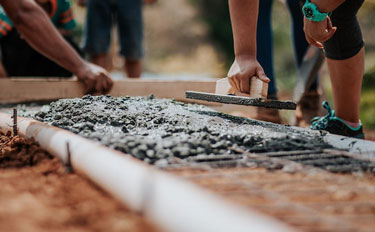

About Dust to Stone
About Us
Dust to Stone Construction has been a trusted name in the industry for over 30 years. With our extensive
experience and expertise, we have successfully transformed countless spaces into stunning works of art.
Our commitment to quality and attention to detail sets us apart from the competition.
Whether it's a residential or commercial project, Dust to Stone Construction delivers exceptional results
every time. From start to finish, our team of skilled professionals ensures that every aspect of the
construction process is handled with precision and care. With our innovative techniques and use of high-quality
materials, we guarantee a durable and long-lasting end product. Trust Dust to Stone Construction to bring your
vision to life and create a space that exceeds your expectations.
Dust to Stone Construction is a reputable company that specializes in providing top-notch construction services. With years of experience in the industry, we pride ourselves on delivering high-quality results that exceed our clients' expectations. Our skilled team of professionals is dedicated to transforming your vision into reality, whether it's a residential or commercial project. From the initial planning stages to the final touches, we ensure attention to detail and a seamless construction process. Trust Dust to Stone Construction for all your construction needs and let us bring your dreams to life.
Our Promise
At Dust to Stone Construction, we are committed to delivering top-notch quality to our customers. Our promise is to provide durable, reliable, and aesthetically pleasing construction solutions that exceed expectations. With our skilled team of professionals and attention to detail, we ensure that every project is completed to the highest standards, leaving our customers satisfied and happy with the results. Trust Dust to Stone Construction for all your construction needs.